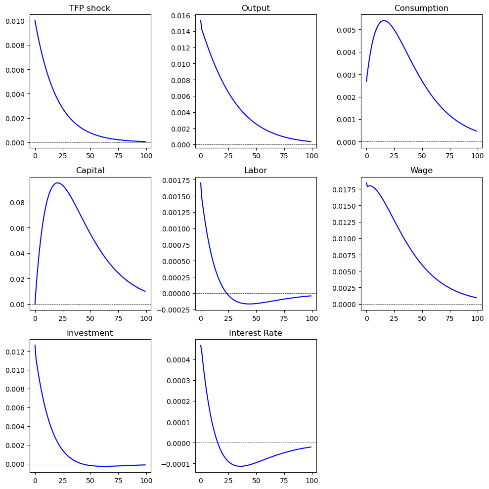

1.6 RBC Model in Python#
The algorithm is the same as that we ues in MATLAB case.
Import Module#
# !pip install autograd # if you use autograd for the first time
import autograd.numpy as np
import math
from autograd import jacobian
np.set_printoptions(suppress=True,precision=4)
import autograd.numpy as np: This imports the numpy library but uses Autograd’s version, which allows for automatic differentiation. This is useful for optimization and sensitivity analysis.
np.set_printoptions(suppress=True, precision=4): This sets the printing options for NumPy arrays, suppressing scientific notation and limiting the precision of printed numbers to 4 decimal places.
Indexing#
nX = 8
nEps = 1
iA, iR, iN, iK, iY, iC, iI, iW = range(nX)
nX = 8: This defines the number of state variables in the model (5 in this case).
nEps = 1: This defines the number of shocks (1 in this case).
iA, iR, iN, iK, iY, iC, iI, iW = range(nX): This creates indices for the state variables:
iA (technology level), iR (interest rate), iN (working hour), iK (capital), iY (output), iC (consumption), iI (investment), iW (wage).
Parameters#
alpha = 0.35 # capital share
beta = 0.99 # discount factor
gamma = 1 # risk aversion
eta = 1 # labor elasticity
delta = 0.025 # depreciation rate
rho = 0.95 # TFP persistency
phi = 7.8 # labor disutility
Model parameters are defined:
alpha: Output elasticity of capital.
beta: Discount factor for future utility.
gamma: Coefficient of relative risk aversion.
delta: Depreciation rate of capital.
rho: Persistence of technology shocks.
def SteadyState():
A = 1
R = 1 / beta - 1 + delta
N = 1/3
K = N * (R/A/alpha)**(1/(alpha-1))
Y = A * K**alpha * N**(1-alpha)
C = Y - delta * K
I = delta*K
W = (1-alpha)*Y/N
X = np.zeros(nX)
X[[iA, iR, iN, iK, iY, iC, iI, iW]] = (A, R, N, K, Y, C, I, W)
return X
def SteadyState(): This defines a function to calculate the steady state of the model.
A = 1.: Sets the technology level (Z) to 1.
R = 1 / beta - 1 + delta: Calculates the steady-state interest rate.
K = N * (R/A/alpha)^(1/(alpha-1)): Calculates the steady-state capital stock using the given parameters.
Y = A * K^alpha * N^(1-alpha): Calculates output (Y) using the Cobb-Douglas production function.
C = Y - delta * K: Calculates consumption (C) as the output minus depreciation on capital.
X = np.zeros(nX): Initializes a vector X of zeros to store state variables.
X[[iA, iR, iN, iK, iY, iC, iI, iW]] = (A, R, N, K, Y, C, I, W): Assigns the calculated values to the corresponding indices in X.
X_SS = SteadyState()
epsilon_SS = 0.0
print("Steady state: {}".format(X_SS))
Steady state: [ 1. 0.0351 0.3333 11.4661 1.1499 0.8633 0.2867 2.2423]
X_SS = SteadyState(): Calls the SteadyState function and stores the result in X_SS.
epsilon_SS = 0.0: Initializes the steady-state value of the shock to zero.
Model equations#
def F(X_Lag, X, X_Prime, epsilon):
# Unpack. The state variables are unpacked from the input vectors X_Lag, X, and X_Prime.
A, R, N, K, Y, C, I, W = X
A_L, R_L, N_L, K_L, Y_L, C_L, I_L, W_L = X_Lag
A_P, R_P, N_P, K_P, Y_P, C_P, I_P, W_P = X_Prime
return np.hstack((
beta * (1+R-delta) * C_P**(-1/gamma) * C**(1/gamma) - 1.0, # Euler equation
phi * N**(1/eta) - W*C**(-1/gamma),
A * K_L**alpha * N**(1-alpha) - Y, # Production function
alpha * A * K_L**(alpha-1) * N**(1-alpha) - R, # MPK
(1-alpha) * A * K_L**alpha * N**(-alpha) - W, # MPN
(1 - delta) * K_L + I_L - K, # Aggregate resource constraint
# Do not use (1 - delta) * K + I - K_P
Y - C - I, # Aggregate resource constraint
rho * np.log(A_L) + epsilon - np.log(A) # TFP evolution
))
To calculate power result, we use ^ in MATLAB, and use ** in Python.
And to calculate log, we directly use log in MATLAB, and use np.log in Python.
def F(X_Lag, X, X_Prime, epsilon): Defines a function F that contains the model equations.
Returns a stacked array with the 8 equations we discussed above.
numpy.hstack() function is used to stack the sequence of input arrays horizontally (i.e. column wise) to make a single array.
Check steady state#
When we select a proper \(\phi\), we should get an array consists of zeros, or close to zero.
F(X_SS,X_SS,X_SS,epsilon_SS)
array([0. , 0.0025, 0. , 0. , 0. , 0. , 0. , 0. ])
Linearize#
A = jacobian(lambda x: F(X_SS,X_SS,x,epsilon_SS))(X_SS)
B = jacobian(lambda x: F(X_SS,x,X_SS,epsilon_SS))(X_SS)
C = jacobian(lambda x: F(x,X_SS,X_SS,epsilon_SS))(X_SS)
E = jacobian(lambda x: F(X_SS,X_SS,X_SS,x))(epsilon_SS)
print("A: {}".format(A))
print("B: {}".format(B))
print("C: {}".format(C))
print("E: {}".format(E))
A: [[ 0. 0. 0. 0. 0. -1.1584 0. 0. ]
[ 0. 0. 0. 0. 0. 0. 0. 0. ]
[ 0. 0. 0. 0. 0. 0. 0. 0. ]
[ 0. 0. 0. 0. 0. 0. 0. 0. ]
[ 0. 0. 0. 0. 0. 0. 0. 0. ]
[ 0. 0. 0. 0. 0. 0. 0. 0. ]
[ 0. 0. 0. 0. 0. 0. 0. 0. ]
[ 0. 0. 0. 0. 0. 0. 0. 0. ]]
B: [[ 0. 0.99 0. 0. 0. 1.1584 0. 0. ]
[ 0. 0. 7.8 0. 0. 3.0089 0. -1.1584]
[ 1.1499 0. 2.2423 0. -1. 0. 0. 0. ]
[ 0.0351 -1. 0.0684 0. 0. 0. 0. 0. ]
[ 2.2423 0. -2.3545 0. 0. 0. 0. -1. ]
[ 0. 0. 0. -1. 0. 0. 0. 0. ]
[ 0. 0. 0. 0. 1. -1. -1. 0. ]
[-1. 0. 0. 0. 0. 0. 0. 0. ]]
C: [[ 0. 0. 0. 0. 0. 0. 0. 0. ]
[ 0. 0. 0. 0. 0. 0. 0. 0. ]
[ 0. 0. 0. 0.0351 0. 0. 0. 0. ]
[ 0. 0. 0. -0.002 0. 0. 0. 0. ]
[ 0. 0. 0. 0.0684 0. 0. 0. 0. ]
[ 0. 0. 0. 0.975 0. 0. 1. 0. ]
[ 0. 0. 0. 0. 0. 0. 0. 0. ]
[ 0.95 0. 0. 0. 0. 0. 0. 0. ]]
E: [0. 0. 0. 0. 0. 0. 0. 1.]
Calculate the Jacobian matrices for the model equations, which represent how the system responds to small changes in state variables.
The last (X_SS) means evaluating the Jacobian at the point X_SS.
A: How small change of future variables affect the system equilibrium, starting ananlysis from X_SS.
B: How nowadays affect the system.
C: How past affect the system.
E: How exogenous shock affect the system, starting analysis from epsilon_SS.
def SolveSystem(A,B,C,E):
# Solve the system using linear time iteration as in Rendahl (2017)
MAXIT = 1000
P = np.zeros(A.shape)
for it in range(MAXIT):
P = -np.linalg.lstsq(B+A@P,C,rcond=None)[0] # (B+A⋅P)⋅(-P)=C
test = np.max(np.abs(C+B@P+A@P@P)) # C+B*P+A*P*P=0
if test < 1e-7:
break
# Impact matrix
# Solution is x_{t}=P*x_{t-1}+Q*eps_t
Q = -np.linalg.inv(B+A@P) @ E # Q = - E*(B+AP)
return P, Q
P, Q = SolveSystem(A,B,C,E)
print(P)
print(Q)
[[ 0.95 -0. -0. -0. -0. -0. -0. -0. ]
[ 0.0444 -0. -0. -0.0023 -0. -0. -0.0008 -0. ]
[ 0.1614 -0. -0. -0.0052 -0. -0. -0.0121 -0. ]
[ 0. -0. -0. 0.975 -0. -0. 1. -0. ]
[ 1.4543 -0. -0. 0.0235 -0. -0. -0.0271 -0. ]
[ 0.2554 -0. -0. 0.0445 -0. -0. 0.0423 -0. ]
[ 1.1989 -0. -0. -0.0211 -0. -0. -0.0694 -0. ]
[ 1.7502 -0. -0. 0.0807 -0. -0. 0.0285 -0. ]]
[1. 0.0467 0.1699 0. 1.5309 0.2689 1.262 1.8423]
Calls a function SolveSystem to solve the linearized system of equations, returning matrices P and Q.
Calculate an impulse response#
IRF_RBC = np.zeros((nX,100))
IRF_RBC[:,0] = Q * 0.01
for t in range(1,100):
IRF_RBC[:,t] = P@IRF_RBC[:,t-1]
IRF_RBC = np.zeros((nX, 100)): Initializes a matrix to store impulse response functions.
IRF_RBC[:, 0] = Q * 0.01: Sets the initial impulse response based on matrix Q.
Loop: Iteratively calculates the impulse responses for 100 periods using the transition matrix P.
In Python, the @ operator is used for matrix multiplication. To convert this line to MATLAB, you will use the * operator instead
Print#
Finally, we plot the impulse response function, which is the same as what we get in MATLAB and Dynare.
import matplotlib.pyplot as plt
import numpy as np
# create a 3x3 subplot
fig, axs = plt.subplots(3, 3, figsize=(10, 10))
# subplot
axs[0, 0].plot(IRF_RBC[iA, :], label='Impulse Response of Output', color='blue')
axs[0, 0].set_title('TFP shock')
axs[0, 0].axhline(0, color='black', lw=0.5, ls='--')
# axs[0, 0].legend()
axs[0, 1].plot(IRF_RBC[iY, :], label='Impulse Response of Output', color='blue')
axs[0, 1].set_title('Output')
axs[0, 1].axhline(0, color='black', lw=0.5, ls='--')
axs[0, 2].plot(IRF_RBC[iC, :], label='Impulse Response of Output', color='blue')
axs[0, 2].set_title('Consumption')
axs[0, 2].axhline(0, color='black', lw=0.5, ls='--')
axs[1, 0].plot(IRF_RBC[iK, :], label='Impulse Response of Output', color='blue')
axs[1, 0].set_title('Capital')
axs[1, 0].axhline(0, color='black', lw=0.5, ls='--')
axs[1, 1].plot(IRF_RBC[iN, :], label='Impulse Response of Output', color='blue')
axs[1, 1].set_title('Labor')
axs[1, 1].axhline(0, color='black', lw=0.5, ls='--')
axs[1, 2].plot(IRF_RBC[iW, :], label='Impulse Response of Output', color='blue')
axs[1, 2].set_title('Wage')
axs[1, 2].axhline(0, color='black', lw=0.5, ls='--')
axs[2, 0].plot(IRF_RBC[iI, :], label='Impulse Response of Output', color='blue')
axs[2, 0].set_title('Investment')
axs[2, 0].axhline(0, color='black', lw=0.5, ls='--')
axs[2, 1].plot(IRF_RBC[iR, :], label='Impulse Response of Output', color='blue')
axs[2, 1].set_title('Interest Rate')
axs[2, 1].axhline(0, color='black', lw=0.5, ls='--')
axs[2, 2].axis('off')
# layout adjustment
plt.tight_layout()
plt.show()
